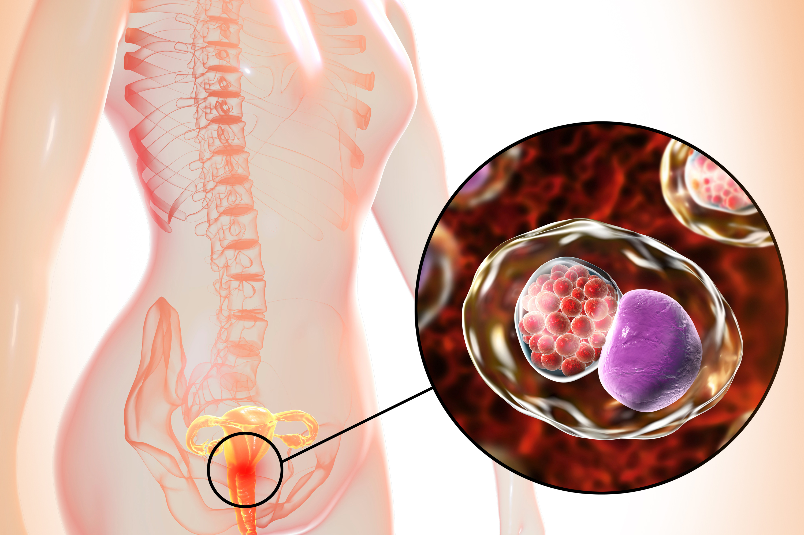

Sífilis
O que é?
Infecção bacteriana geralmente transmitida pelo contato sexual que começa como uma ferida indolor.
Sintomas:
A sífilis desenvolve-se em estágios, e os sintomas variam conforme cada estágio. A primeira etapa envolve uma ferida indolor na genitália, no reto ou na boca. Após a cura da ferida inicial, a segunda fase é caracterizada por uma irritação na pele. Depois, não há sintomas até a fase final, que pode ocorrer anos mais tarde. Essa fase final pode resultar em danos para cérebro, nervos, olhos ou coração.
Tratamento:
A sífilis é tratada com penicilina. Os parceiros sexuais também devem ser tratados.
Herpes Genital

O que é?
Infecção comum sexualmente transmissível caracterizada por dor e feridas genitais.
Sintomas:
Causada pelo vírus da herpes simples, a doença pode afetar tanto homens como mulheres. Dor, coceira e pequenas feridas podem ocorrer no primeiro momento. Elas formam úlceras e crostas. Após a infecção inicial, a herpes genital permanece inativa no corpo. Os sintomas podem reaparecer durante anos.
Tratamento:
É possível usar medicamentos para controlar os surtos.
Clamidia
O que é?
Uma doença comum e sexualmente transmissível que pode não apresentar sintomas.
Sintomas:
A clamídia afeta pessoas de todas as idades, porém é mais comum em mulheres jovens. Muitas pessoas com clamídia, mesmo sem apresentar sintomas, podem infectar outros indivíduos por contato sexual. Os sintomas incluem dor genital e secreção pela vagina ou pênis.
Tratamento:
É recomendado o uso de antibióticos tanto para o paciente afetado como para os parceiros sexuais dele. A triagem de outras informações sexualmente transmissíveis também deve ser realizada.
Gonorreia
O que é?
Infecção bacteriana sexualmente transmissível que, se não for tratada, pode causar infertilidade.
Sintomas:
A triagem regular pode ajudar a detectar casos em que há uma infecção, apesar da ausência de sintomas. Os sintomas incluem dor ao urinar e secreção anormal do pênis ou da vagina. Os homens podem sentir dor testicular e as mulheres, dor pélvica. Em alguns casos, a gonorreia não tem sintomas.
Tratamento:
A gonorreia pode ser tratada com antibióticos.